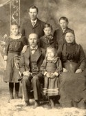
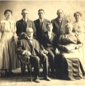

The Kleinsorge Family Tree - Person Sheet
The Kleinsorge Family Tree - Person Sheet

NameKLEINSORGE, Theodor 
BirthJul 7, 1852, Heiminghausen, Schmallenberg, Germany
DeathMar 17, 1932, Westphalia, Kansas
FatherKLEINSORGE, Johann Fredrick Anton (1801-1864)
MotherKÖHNE, Anna Maria (1812-1874)
Spouses
Marriage1877, Germany
ChildrenFrank Anthony (1878-1959)
Mariam Elizabeth (1880-1880)
MarriageMay 23, 1884, Westphalia, Kansas

BirthJun 26, 1868, Montrose, Missouri
DeathJul 30, 1938, Germantown, Missouri
FatherKLOER, Frederick Wilhelm (1838-1888)
MotherSICKMAN, Marie Francisca (1843-1876)
MarriageAug 16, 1886, Westphalia, Kansas
ChildrenVincent Matthew (1887-1962)
Jacke (1888-1888)
Mary Anna (1889-1979)
Herman William (1894-1962)
Mary Rose (1897-1986)
Frank (1903-1989)
Johne (1906-1906)